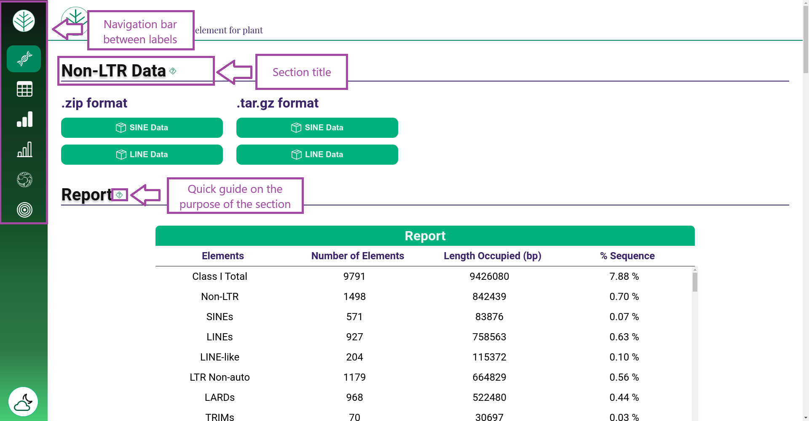
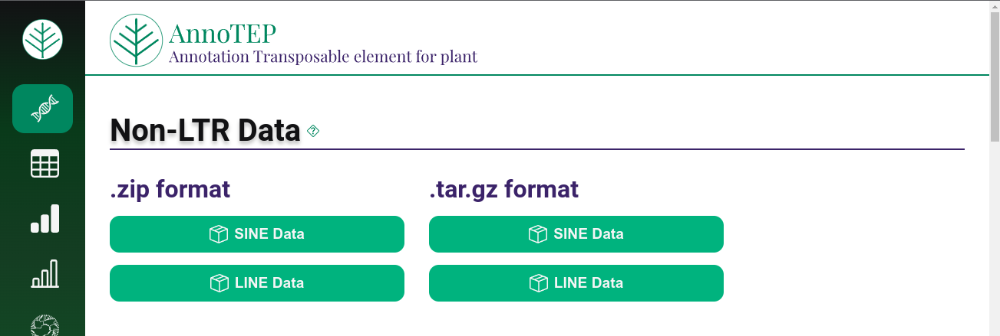
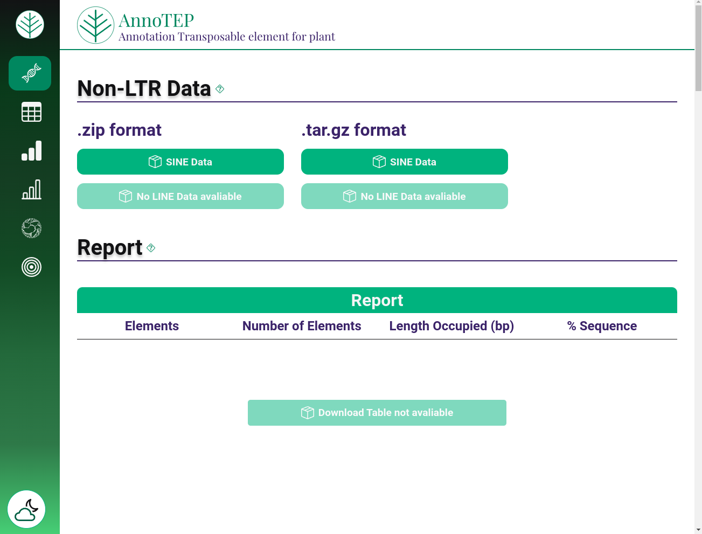
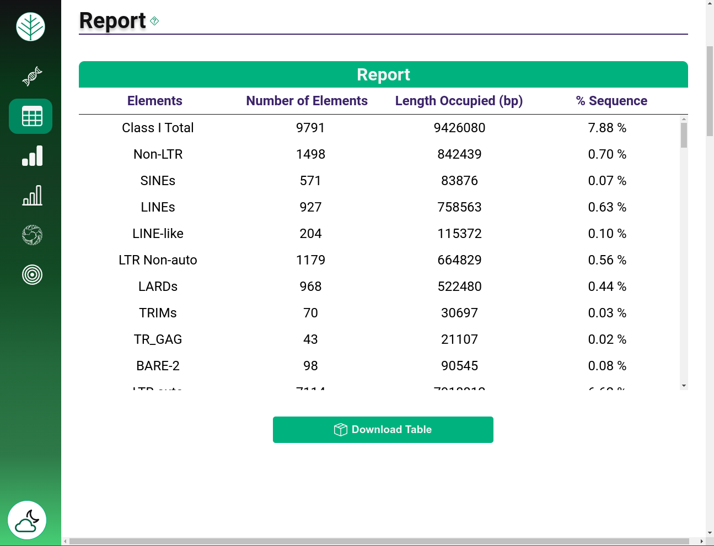
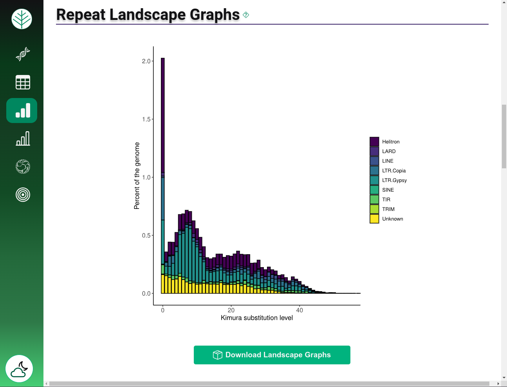
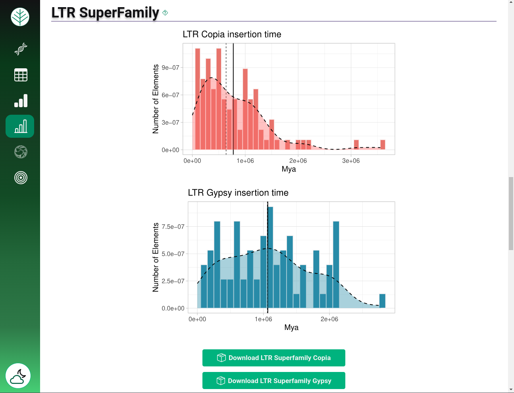
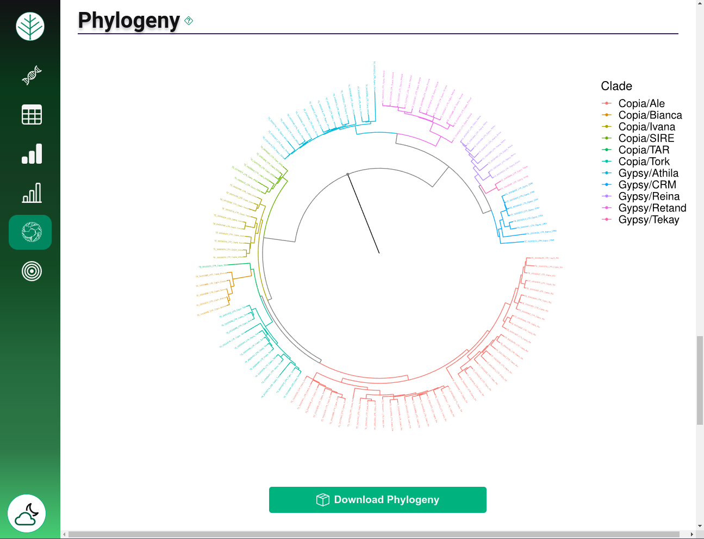
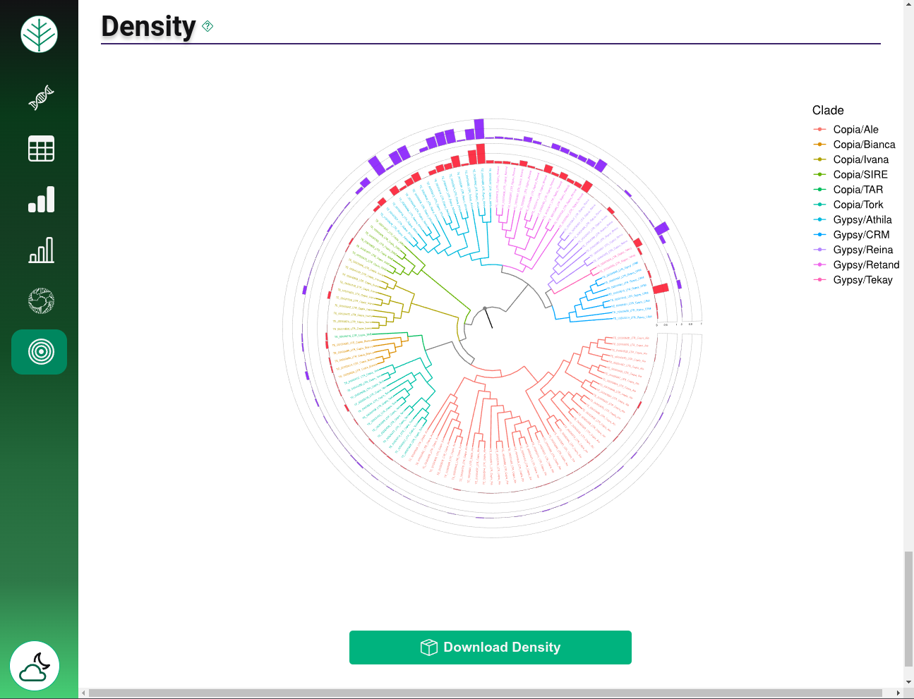

AnnoTEP documentation - Annotation Transposable Elements for Plants
Welcome to the AnnoTEP documentation.
The AnnoTEP framework has been developed to facilitate the annotation of transposable elements in plant genomes and to provide essential support to the scientific community involved in research centered on these elements.
Transposable elements (TEs) are mobile genetic elements that have the ability to move around the genome, inserting themselves into different regions. Also referred to as "jumping genes", mobile genetic elements (MGEs) or insertion elements (ISs), they constitute a category of genetic sequences that play a fundamental role in the evolution and genomic dynamics of organisms. Their intrinsic ability to move within the genome, either by RNA-mediated retrotransposition (Class I or Retrotransposons), using the "copy and paste" mechanism, or by direct DNA transposition (Class II or Transposons), using the "cut and paste" or "copy and paste" mechanism, gives these elements a remarkable influence on evolutionary processes and genomic plasticity.
The platform covers various characteristics of TEs and presents the results in the form of detailed reports, informative graphs and phylogenetic trees. It provides visual resources to enrich the analysis and allow a more complete understanding of the evolutionary dynamics of these genomic sequences.
How to use the platform - web server
This section details the steps required to submit data for annotation of traversable elements on the web server.
Staying informed about the annotation process
To start the annotation process and obtain information on the progress of your work, you need to provide your e-mail address in the panel.
After submission, you will receive a confirmation email and then a second email will be sent as soon as the annotation process is complete, this email will contain a link to the outputs of the analyzed data. If any errors occur during the analysis, you will also receive an email explaining what happened.
It is important to note that when you receive the second email with the link to your annotated work, you will have 48 hours to access and review the results. the results, after which time the data will be deleted from the database.
Entering input data
The ideal data input accepted by the AnnoTEP platform is FASTA format files containing the chromosomes of plant genomes. The "Genome Data" panel allows you to select the file on your machine.
Annotation systems
Before submitting your annotations, you need to choose the type of annotation you want to make, by default the SINE annotation is already selected, so confirm your selections before submitting your data.
The annotation system allows you to make four different types of annotations:
Selecting SINE Annotation: This option exclusively analyzes the SINE elements present in the plant genome, generating libraries containing specific SINE sequences.
Selecting LINE Annotation: This option exclusively analyzes the LINE elements present in the plant genome, generating libraries containing specific LINE sequences.
Selecting SINE and LINE Annotation (Together): This choice leads to the joint analysis of SINEs and LINEs elements in the plant genome, generating libraries containing sequences from both categories.
Selecting Complete Annotation: This option performs a comprehensive analysis of the SINEs and LINEs elements, including an in-depth analysis using libraries of both elements. In addition to the conventional outputs, such as tables of TRIM, LARD, TR_GAG, BARE-2, MITES, Helitron, Gypsy Family and Copia Family elements, age graphs are generated for the Gypsy and Copia families, as well as a phylogenetic tree.
Sending data
Once you have entered all the necessary data, you can click on the "submit" button and send your genome for analysis. When the job is completed without any errors, you will receive an e-mail informing you that the results are available. annotation.
Please note: Results from the web platform are stored in the database for up to 48 hours. To ensure the preservation of your data, we advise users to check and save their information before this period expires.
Results page - web server
By accessing the link in the second e-mail, or consulting the "exemple of annotation" available on the home page, you will be directed to the results page.

On the results page, you are initially presented with a sidebar on the left, which will help you navigate between the different sections quickly. The sections are given titles based on the analyses carried out, and each section is accompanied by question mark-shaped icons which provide additional information to help you understand the results presented.
Viewing non-LTR data
In this section, you will have access to the SINEs and/or LINEs libraries, results generated from the SINEs, LINEs and Completa annotations. To download the content, you have two options: .zip or .tar.gz compressed format.

If you have chosen to annotate only SINE or LINE, you will see a different presentation. In these options, only the library relating to the chosen annotation will be available, while the other content will remain blocked or "not avaliable".

If you choose to annotate SINE and LINE together, all the options in this section will be unlocked, but the other sections will remain empty.
To access the data of the other results, you must have opted for the full annotation.
Viewing the transposable elements report
The "Report" section presents a comprehensive table of the various transposable elements found in the genome, including TRIMs, LARDs, BARE-2, Copia Superfamily, Gypsy Superfamily, and others. In this report, partial elements are identified by the suffix "-like".
In the table you can see the name of each element, its quantity, the number of base pairs (bp) and the corresponding percentage in the genomic sequence. When you download this report, you will be downloading a table in CSV format (values separated by commas).

Checking repeated landscape graphics
In the "repeat landscape graph" section, you are presented with a repeat landscape graph that offers a visual representation of the relative amount of each transposable element class, correlated with the Kimura distance on the x-axis, serving as a time indicator. In contrast, the y-axis displays the comparative coverage of each repeat class, adjusted for genome size. Thus, the repeat landscape graph provides a coherent inference of the relative ages of each element identified in a specific genome.
When you download this graph, you will receive a figure in SVG format, ready to be used in your research.

Looking at the ages of the LTR SuperFamily
The age of transposable elements reflects the evolutionary dynamics of the genome over time, and understanding the ages of the LTR Gypsy and Copia Superfamilies allows us to reconstruct the evolutionary history of these elements.
In the "LTR SuperFamily" section you are presented with histograms representing the ages of the Gypsy and Copia LTR Superfamilies.
The dashed vertical lines highlight the median, providing a central measure, while the horizontal line represents the average in millions of years (Mya).

Visualizing phylogenetic trees and their density
Phylogeny makes it possible to reconstruct the evolutionary history of organisms, revealing how different species are related to each other. This provides a temporal perspective that helps to understand how organisms have evolved over time.
The "phylogeny" section aligns all the annotated LTR-RT domains of the genome. By exploring this section, you will have the opportunity to visualize the evolutionary relationship between these elements, revealing patterns and connections that help elucidate the evolution of these sequences over generations.

Then, in the next section, we highlight the "density" of each branch identified in the genome.
The outer circle, highlighted in purple, offers a visual representation of the length occupied by each element in base pairs (bp), providing a clear perception of the physical extent of each element in the genome. On the other hand, the inner circle, in red, reflects the number of occurrences of each element, providing a view of the distribution and abundance of these elements in the genome.

Note: During the annotation process, it is recommended that users run a maximum of two jobs simultaneously, due to server limitations. If the intention is to annotate large data sets, we suggest downloading and using the local version of AnnoTEP. This recommendation also extends to private research, in order to optimize efficiency and ensure a more stable experience during data analysis.

 Data visualization in graph format and phylogenetic trees.
Data visualization in graph format and phylogenetic trees.
 Representative example of complete annotation.
Click here
Representative example of complete annotation.
Click here